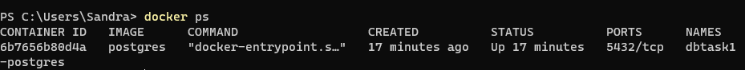
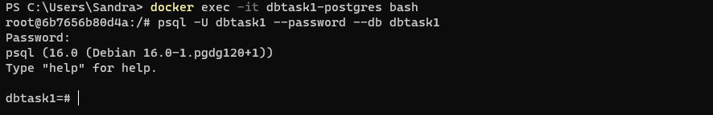
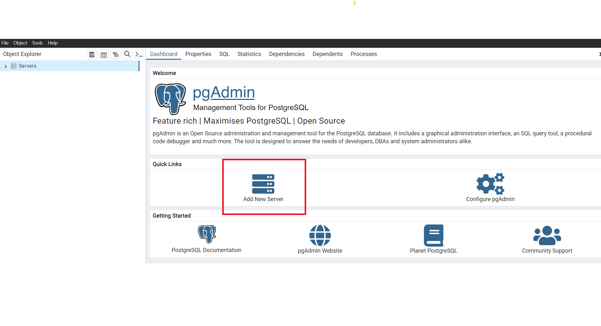
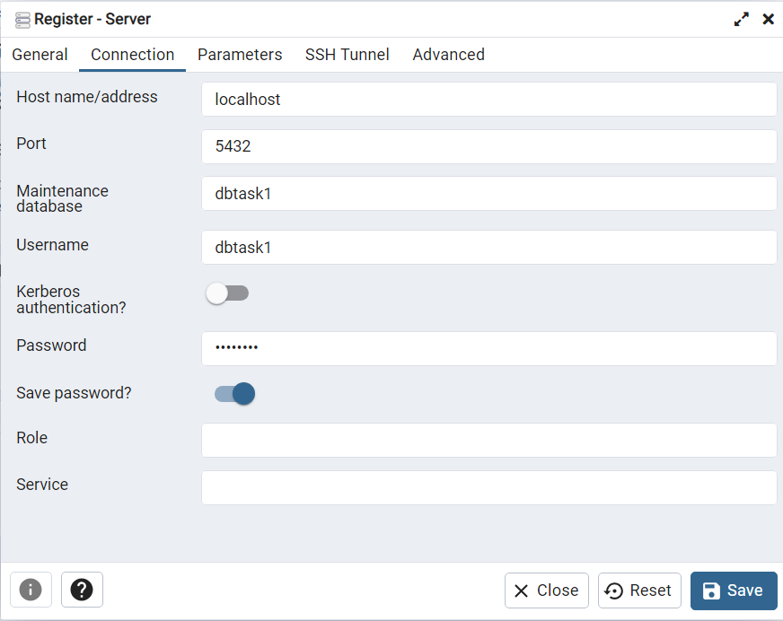
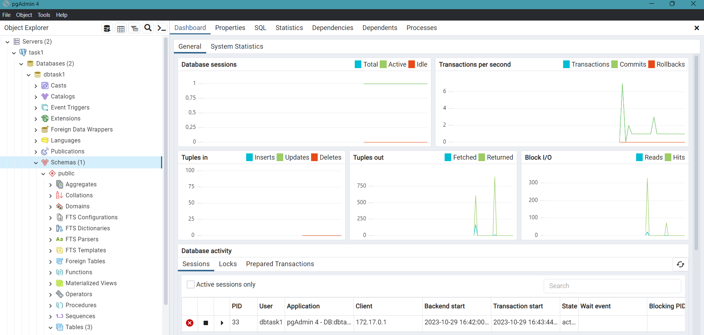
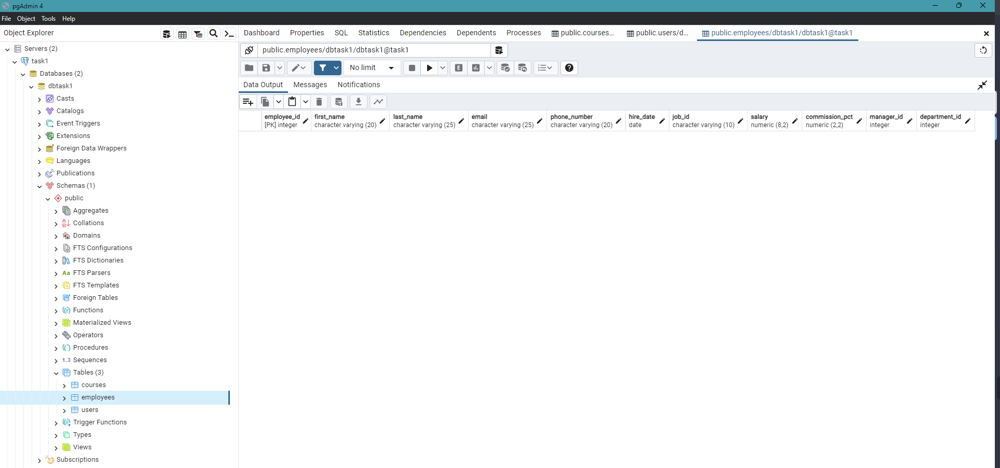
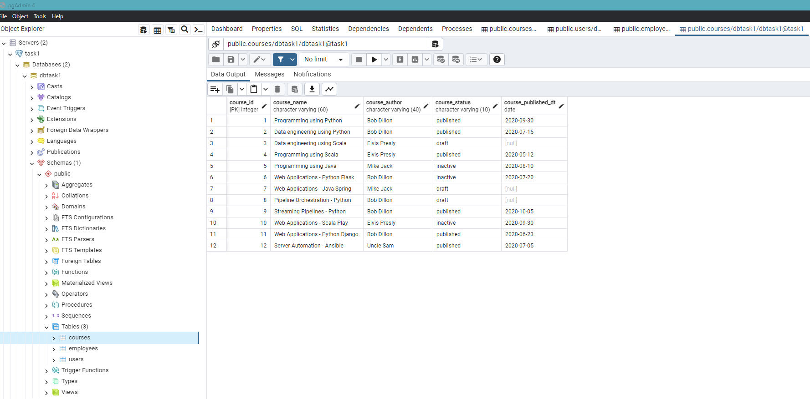
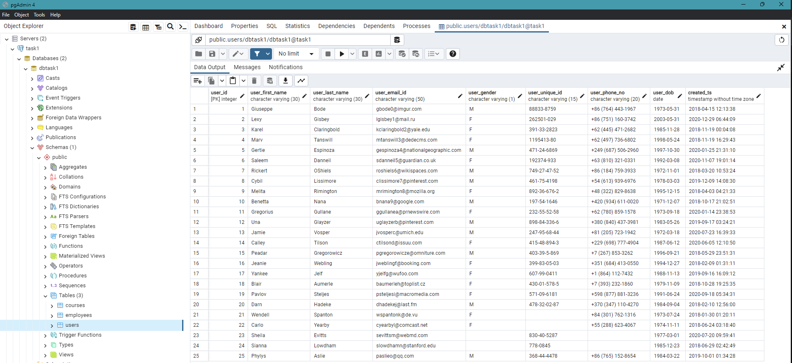

Configuraciones para la conexión con la base de datos#
Creación de instancia de PostgreSQL en Docker#
Antes de iniciar con el desarrollo de las consultas, nos conectamos a la instancia de PostgreSQL creada en Docker.
Iniciamos verificando los procesos que se están ejecutando en el contenedor.
docker ps

Figura 1. Procesos siendo ejecutados por nuestro contenedor **Docker**
Para conectarnos a la instancia de PostgreSQL creada por el contenedor, utilizamos el siguiente comando:
docker exec -it dbtask1-postgres bash
docker exec se encarga de ejecutar un comando de forma interactiva en un contenedor en ejecución, en este caso, el contenedor para PostgreSQL previamente instanciado, utilizando el programa bash dentro del contenedor. Luego de hacerlo, podemos conectarnos a postgres desde el bash utilizando el siguiente comando:
:psql -U dbtask1 --password --db dbtask1

Figura 2. Conexión a base de datos. La contraseña es suministrada en el prompt
Administración de la base de datos con pgAdmin#
Para visualizar las tablas creadas, se crea una conexión con pgAdmin, siguiendo los pasos explicados en clase.

Figura 3. Página de inicio de pgAdmin

Figura 4. Ingreso de credenciales para conectarnos a la base de datos instanciada.

Figura 5. Base de datos del proyecto conectada
Configuración del entorno Python#
Como lo indica el punto 4 de la asignación, las consultas SQL deben realizarse desde Python usando la API psycopg2. Para ello, inicialmente crearemos un entorno aislado con las dependencias que serán utilizadas en el marco del proyecto.
conda create --name tarea1_venv python=3.9
Ahora para activarlos, usamos:
conda activate tarea1_venv
Instalamos librerías básicas para el análisis de datos y el desarrollo de las consultas.
pip install -U jupyter-book
pip install -U psycopg2
pip install -U numpy
pip install -U scipy
pip install -U pandas
pip install -U matplotlib
pip install -U scikit-learn
pip install -U jupyter-book
pip install -U psycopg2
pip install jupyter lab
Ahora, instalamos un nuevo kernel de IPython con el nombre “tarea1_venv” en el entorno de mi usuario actual. Esto con el propósito de utilizar este kernel específico en mis Jupyter notebooks para trabajar en el entorno virtual creado para el proyecto.
pip install -U ipykernel
python -m ipykernel install --user --name=tarea1_venv
En este caso, las consultas las desarrollamos en Jupyter lab.
jupyter lab
git clone https://github.com/TomasBeuzen/python-programming-for-data-science.git
Python API para PosgreSQL#
La biblioteca psycopg2 es un controlador de base de datos para PostgreSQL en Python. Para el propósito de la actividad, importamos la librería y la clase Error para manejar errores específicos de PostgreSQL
import psycopg2
from psycopg2 import Error
Ahora intentamos establecer una conexión con la base de datos PostgreSQL creada. Utilizamo los parámetros de conexión, como el nombre de usuario, contraseña, host, puerto y nombre de la base de datos, para conectarnos a un servidor local. Si la conexión se establece con éxito, creamos un objeto cursor que se utilizará para ejecutar comandos SQL en la base de datos.
try:
connection = psycopg2.connect(user="dbtask1",
password="password",
host="localhost",
port="5432",
database="dbtask1")
cursor = connection.cursor()
print("PostgreSQL server information")
print(connection.get_dsn_parameters(), "\n")
cursor.execute("SELECT version();")
record = cursor.fetchone()
print("You are connected to - ", record, "\n")
except (Exception, Error) as error:
print("Error while connecting to PostgreSQL", error)
#finally:
#if (connection):
#cursor.close()
#connection.close()
#print("PostgreSQL connection is closed")
PostgreSQL server information
{'user': 'dbtask1', 'channel_binding': 'prefer', 'dbname': 'dbtask1', 'host': 'localhost', 'port': '5432', 'options': '', 'sslmode': 'prefer', 'sslcompression': '0', 'sslcertmode': 'allow', 'sslsni': '1', 'ssl_min_protocol_version': 'TLSv1.2', 'gssencmode': 'disable', 'krbsrvname': 'postgres', 'gssdelegation': '0', 'target_session_attrs': 'any', 'load_balance_hosts': 'disable'}
You are connected to - ('PostgreSQL 16.0 (Debian 16.0-1.pgdg120+1) on x86_64-pc-linux-gnu, compiled by gcc (Debian 12.2.0-14) 12.2.0, 64-bit',)
Consultas SQL#
I. CREATE TABLE employees#
Este código crea una nueva tabla llamada “employees” en una base de datos y establece un conjunto de reglas y restricciones en esta tabla para garantizar la integridad de los datos, como la unicidad del ID de empleado.
cursor.execute('''DROP TABLE IF EXISTS employees''')
cursor.execute('''CREATE TABLE employees
( employee_id INTEGER
, first_name VARCHAR(20)
, last_name VARCHAR(25)
, email VARCHAR(25)
, phone_number VARCHAR(20)
, hire_date DATE
, job_id VARCHAR(10)
, salary NUMERIC(8,2)
, commission_pct NUMERIC(2,2)
, manager_id INTEGER
, department_id INTEGER
) ;
CREATE UNIQUE INDEX emp_emp_id_pk
ON employees (employee_id) ;
ALTER TABLE employees ADD
PRIMARY KEY (employee_id);
''')
print("Table created successfully")
# Confirma los cambios en la base de datos
connection.commit()
Table created successfully

Figura 6. Vista en pgAdmin de la creación de la base de datos employees.
Usando la sentencia a continuación, seleccionamos todos los registros de la tabla “employees”. Luego, utiliza la cláusula “LIMIT 10” para restringir el resultado a solo 10 filas.
# Ejecutar la consulta
cursor.execute("SELECT * FROM employees LIMIT 10")
# Recuperar los resultados
rows = cursor.fetchall()
# Iterar sobre los resultados
for row in rows:
print(row)
print("Operation done successfully")
Operation done successfully
Ahora, empleando esta sentencia hacemos una agregación para contar el número total de registros en la tabla “employees”. La consulta devolverá un solo valor que representa la cantidad total de registros en la tabla “employees”.
# Ejecutar la consulta
cursor.execute("SELECT count(1) FROM employees")
# Recuperar el resultado
count = cursor.fetchone()[0]
# Imprimir el resultado
print(f"El número de empleados es: {count}")
El número de empleados es: 0
II. CREATE TABLE courses#
Se creó la tabla courses con las siguientes columnas:
mcourse_id- integer y primary keycourse_name- valores alfanuméricos o de cadena de hasta 60 caracterescourse_author- nombre del autor de hasta 40 caracterescourse_status- published, draft, inactive.course_published_dt- valor de tipo fecha
cursor.execute('''DROP TABLE IF EXISTS courses''')
cursor.execute("""
CREATE TABLE courses (
course_id SERIAL PRIMARY KEY,
course_name VARCHAR(60),
course_author VARCHAR(40),
course_status VARCHAR(10) CHECK (course_status IN ('published', 'draft', 'inactive')),
course_published_dt DATE
)
""")
# Confirmar los cambios en la base de datos
connection.commit()
III. INSERT INTO courses#
Se insertaron los datos proporcionados en courses. Nos aseguramos de que el id fuera generado por el sistema.
data_to_insert = [
("Programming using Python", "Bob Dillon", "published", "2020-09-30"),
("Data engineering using Python", "Bob Dillon", "published", "2020-07-15"),
("Data engineering using Scala", "Elvis Presly", "draft", None),
("Programming using Scala", "Elvis Presly", "published", "2020-05-12"),
("Programming using Java", "Mike Jack", "inactive", "2020-08-10"),
("Web Applications - Python Flask", "Bob Dillon", "inactive", "2020-07-20"),
("Web Applications - Java Spring", "Mike Jack", "draft", None),
("Pipeline Orchestration - Python", "Bob Dillon", "draft", None),
("Streaming Pipelines - Python", "Bob Dillon", "published", "2020-10-05"),
("Web Applications - Scala Play", "Elvis Presly", "inactive", "2020-09-30"),
("Web Applications - Python Django", "Bob Dillon", "published", "2020-06-23"),
("Server Automation - Ansible", "Uncle Sam", "published", "2020-07-05")
]
# Insertar datos en la tabla. %s es un marcador de posición
for course in data_to_insert:
cursor.execute("""
INSERT INTO courses (course_name, course_author, course_status, course_published_dt)
VALUES (%s, %s, %s, %s);
""", course)
connection.commit()
print("Records created successfully")
Records created successfully

Figura 7. Vista en pgAdmin de la creación de la base de datos courses.
IV. DELET FROM and WHERE in courses#
Se borraron todos los cursos que no estén en modo borrador ni publicados. Para validar la correcta ejecución de esta sentencia, obtuvimos el recuento de todos los cursos publicados por autor y nos aseguramos de que la salida está ordenada en forma descendente por recuento.
# Borrar los cursos que no están en modo "borrador" ni "publicados"
cursor.execute("DELETE FROM courses WHERE course_status NOT IN ('draft', 'published')")
# Obtener el recuento de cursos "publicados" por autor
cursor.execute("""
SELECT course_author, COUNT(*) AS course_count
FROM courses
WHERE course_status = 'published'
GROUP BY course_author
ORDER BY course_count DESC;
""")
# Obtener los resultados y mostrarlos
results = cursor.fetchall()
for row in results:
print(f"Autor: {row[0]}, Cantidad de Cursos Publicados: {row[1]}")
Autor: Bob Dillon, Cantidad de Cursos Publicados: 4
Autor: Elvis Presly, Cantidad de Cursos Publicados: 1
Autor: Uncle Sam, Cantidad de Cursos Publicados: 1
VI. CREATE TABLE users#
Creamos la base de datos users, con las siguientes variables:
cursor.execute('''DROP TABLE IF EXISTS users''')
cursor.execute('''CREATE TABLE users(
user_id SERIAL PRIMARY KEY,
user_first_name VARCHAR(30),
user_last_name VARCHAR(30),
user_email_id VARCHAR(50),
user_gender VARCHAR(1),
user_unique_id VARCHAR(15),
user_phone_no VARCHAR(20),
user_dob DATE,
created_ts TIMESTAMP
)''')
data_to_insert2 = [
('Giuseppe', 'Bode', 'gbode0@imgur.com', 'M', '88833-8759',
'+86 (764) 443-1967', '1973-05-31', '2018-04-15 12:13:38'),
('Lexy', 'Gisbey', 'lgisbey1@mail.ru', 'F', '262501-029',
'+86 (751) 160-3742', '2003-05-31', '2020-12-29 06:44:09'),
('Karel', 'Claringbold', 'kclaringbold2@yale.edu', 'F', '391-33-2823',
'+62 (445) 471-2682', '1985-11-28', '2018-11-19 00:04:08'),
('Marv', 'Tanswill', 'mtanswill3@dedecms.com', 'F', '1195413-80',
'+62 (497) 736-6802', '1998-05-24', '2018-11-19 16:29:43'),
('Gertie', 'Espinoza', 'gespinoza4@nationalgeographic.com', 'M', '471-24-6869',
'+249 (687) 506-2960', '1997-10-30', '2020-01-25 21:31:10'),
('Saleem', 'Danneil', 'sdanneil5@guardian.co.uk', 'F', '192374-933',
'+63 (810) 321-0331', '1992-03-08', '2020-11-07 19:01:14'),
('Rickert', 'O''Shiels', 'roshiels6@wikispaces.com', 'M', '749-27-47-52',
'+86 (184) 759-3933', '1972-11-01', '2018-03-20 10:53:24'),
('Cybil', 'Lissimore', 'clissimore7@pinterest.com', 'M', '461-75-4198',
'+54 (613) 939-6976', '1978-03-03', '2019-12-09 14:08:30'),
('Melita', 'Rimington', 'mrimington8@mozilla.org', 'F', '892-36-676-2',
'+48 (322) 829-8638', '1995-12-15', '2018-04-03 04:21:33'),
('Benetta', 'Nana', 'bnana9@google.com', 'M', '197-54-1646',
'+420 (934) 611-0020', '1971-12-07', '2018-10-17 21:02:51'),
('Gregorius', 'Gullane', 'ggullanea@prnewswire.com', 'F', '232-55-52-58',
'+62 (780) 859-1578', '1973-09-18', '2020-01-14 23:38:53'),
('Una', 'Glayzer', 'uglayzerb@pinterest.com', 'M', '898-84-336-6',
'+380 (840) 437-3981', '1983-05-26', '2019-09-17 03:24:21'),
('Jamie', 'Vosper', 'jvosperc@umich.edu', 'M', '247-95-68-44',
'+81 (205) 723-1942', '1972-03-18', '2020-07-23 16:39:33'),
('Calley', 'Tilson', 'ctilsond@issuu.com', 'F', '415-48-894-3',
'+229 (698) 777-4904', '1987-06-12', '2020-06-05 12:10:50'),
('Peadar', 'Gregorowicz', 'pgregorowicze@omniture.com', 'M', '403-39-5-869',
'+7 (267) 853-3262', '1996-09-21', '2018-05-29 23:51:31'),
('Jeanie', 'Webling', 'jweblingf@booking.com', 'F', '399-83-05-03',
'+351 (684) 413-0550', '1994-12-27', '2018-02-09 01:31:11'),
('Yankee', 'Jelf', 'yjelfg@wufoo.com', 'F', '607-99-0411',
'+1 (864) 112-7432', '1988-11-13', '2019-09-16 16:09:12'),
('Blair', 'Aumerle', 'baumerleh@toplist.cz', 'F', '430-01-578-5',
'+7 (393) 232-1860', '1979-11-09', '2018-10-28 19:25:35'),
('Pavlov', 'Steljes', 'psteljesi@macromedia.com', 'F', '571-09-6181',
'+598 (877) 881-3236', '1991-06-24', '2020-09-18 05:34:31'),
('Darn', 'Hadeke', 'dhadekej@last.fm', 'M', '478-32-02-87',
'+370 (347) 110-4270', '1984-09-04', '2018-02-10 12:56:00'),
('Wendell', 'Spanton', 'wspantonk@de.vu', 'F', ' ',
'+84 (301) 762-1316', '1973-07-24', '2018-01-30 01:20:11'),
('Carlo', 'Yearby', 'cyearbyl@comcast.net', 'F', '',
'+55 (288) 623-4067', '1974-11-11', '2018-06-24 03:18:40'),
('Sheila', 'Evitts', 'sevittsm@webmd.com', '', '830-40-5287',
' ', '1977-03-01', '2020-07-20 09:59:41'),
('Sianna', 'Lowdham', 'slowdhamn@stanford.edu', '', '778-0845',
' ', '1985-12-23', '2018-06-29 02:42:49'),
('Phylys', 'Aslie', 'paslieo@qq.com', 'M', '368-44-4478',
'+86 (765) 152-8654', '1984-03-22', '2019-10-01 01:34:28')
]
# Insertar datos en la tabla. %s es un marcador de posición
for user in data_to_insert2:
cursor.execute("""
INSERT INTO users (user_first_name, user_last_name, user_email_id, user_gender,
user_unique_id, user_phone_no, user_dob, created_ts)
VALUES (%s, %s, %s, %s, %s, %s, %s, %s);
""", user)
# Confirmar la transacción
connection.commit()
print("Records created successfully")
Records created successfully

Figura 8. Vista en pgAdmin de la creación de la base de datos users.
VII SELECT EXTRACT in users#
Para obtener el número de usuarios creados por año, se ejecutó el siguiente código:
# Consulta para obtener el recuento de usuarios por año
cursor.execute("""
SELECT EXTRACT(YEAR FROM created_ts)::integer AS created_year, COUNT(*) AS user_count
FROM users
GROUP BY created_year
ORDER BY created_year;
""")
# Obtener los resultados y mostrarlos
results = cursor.fetchall()
for row in results:
print(f"Año: {row[0]:.0f}, Cantidad de Usuarios: {row[1]:.0f}")
Año: 2018, Cantidad de Usuarios: 13
Año: 2019, Cantidad de Usuarios: 4
Año: 2020, Cantidad de Usuarios: 8
La consulta agrupa los usuarios por año en el que fueron creados, cuenta cuántos usuarios hay en cada año y luego los muestra en orden ascendente por año.
VIII. SELECT, TO_CHAR, WHERE EXTRACT and ORDER BY in users#
Para obtener los días de nacimiento de todos los usuarios nacidos en el mes Mayo, utilizamos las siguientes setencias:
# Consulta para obtener los días de nacimiento de los usuarios nacidos en mayo
cursor.execute("""
SELECT
user_id,
user_dob,
user_email_id,
TO_CHAR(user_dob, 'FMDay') AS user_day_of_birth
FROM users
WHERE EXTRACT(MONTH FROM user_dob) = 5 -- Filtrar por el mes de mayo
ORDER BY EXTRACT(DAY FROM user_dob); -- Ordenar por día dentro de mayo
""")
# Obtener los resultados y mostrarlos
results = cursor.fetchall()
for row in results:
print(f"ID de Usuario: {row[0]}, Fecha de Nacimiento: {row[1]}, Email: {row[2]}, Día de Nacimiento: {row[3]}")
ID de Usuario: 4, Fecha de Nacimiento: 1998-05-24, Email: mtanswill3@dedecms.com, Día de Nacimiento: Sunday
ID de Usuario: 12, Fecha de Nacimiento: 1983-05-26, Email: uglayzerb@pinterest.com, Día de Nacimiento: Thursday
ID de Usuario: 1, Fecha de Nacimiento: 1973-05-31, Email: gbode0@imgur.com, Día de Nacimiento: Thursday
ID de Usuario: 2, Fecha de Nacimiento: 2003-05-31, Email: lgisbey1@mail.ru, Día de Nacimiento: Saturday
La consulta filtra los registros de usuarios cuyos cumpleaños están en el mes de mayo y luego los ordena por el día de nacimiento dentro de mayo. Además, utiliza la función TO_CHAR para obtener el nombre del día de la semana correspondiente a la fecha de nacimiento y lo muestra en la columna “user_day_of_birth”. Luego, se recuperan los resultados de la consulta y se muestran en un bucle for.
IX. SELECT, UPPER, WHERE EXTRACT and ORDER BY in users#
El objetivo de esta consulta es obtener el nombre y el id de correo electrónico de cada usuario añadido en el año 2019.
cursor.execute("""
SELECT
user_id,
UPPER(user_first_name || ' ' || user_last_name) AS user_name,
user_email_id,
created_ts,
EXTRACT(YEAR FROM created_ts) AS created_year
FROM users
WHERE EXTRACT(YEAR FROM created_ts) = 2019
ORDER BY user_name;
""")
# Obtener los resultados y mostrarlos
results = cursor.fetchall()
for row in results:
user_id, user_name, user_email_id, created_ts, created_year = row
print(f"ID de Usuario: {user_id}, Nombre: {user_name}, Email: {user_email_id}, Fecha de Creación: {created_ts}, Año de Creación: {created_year}")
ID de Usuario: 8, Nombre: CYBIL LISSIMORE, Email: clissimore7@pinterest.com, Fecha de Creación: 2019-12-09 14:08:30, Año de Creación: 2019
ID de Usuario: 25, Nombre: PHYLYS ASLIE, Email: paslieo@qq.com, Fecha de Creación: 2019-10-01 01:34:28, Año de Creación: 2019
ID de Usuario: 12, Nombre: UNA GLAYZER, Email: uglayzerb@pinterest.com, Fecha de Creación: 2019-09-17 03:24:21, Año de Creación: 2019
ID de Usuario: 17, Nombre: YANKEE JELF, Email: yjelfg@wufoo.com, Fecha de Creación: 2019-09-16 16:09:12, Año de Creación: 2019
El código ejecuta una consulta SQL para seleccionar registros de una tabla de usuarios. Luego, filtra y ordena los resultados para obtener información específica sobre usuarios cuya fecha de creación es en el año 2019. La información incluye el ID de usuario, el nombre en mayúsculas, la dirección de correo electrónico, la fecha de creación y el año de creación, que se muestra en la consola como una lista de usuarios que cumplen con este criterio.
X. SELECT, CASE, COUNT, GROUP BY and ORDER BY in users#
Obtuvimos el número de usuarios por género a través del siguiente código.
cursor.execute("""
SELECT
CASE
WHEN user_gender = 'M' THEN 'Male'
WHEN user_gender = 'F' THEN 'Female'
ELSE 'Not Specified'
END AS gender,
COUNT(*) AS user_count
FROM users
GROUP BY user_gender
ORDER BY user_count DESC;
""")
# Obtener los resultados y mostrarlos
results = cursor.fetchall()
print("gender \t user_count")
print("-" * 30) # Línea de separación
for row in results:
gender, user_count = row
print(f"{gender:10} \t {user_count:10}")
gender user_count
------------------------------
Female 13
Male 10
Not Specified 2
La consulta utiliza CASE para traducir las etiquetas de género ‘M’ a ‘Male’, ‘F’ a ‘Female’ y cualquier otro valor a ‘Not Specified’. Luego, usando COUNT para contar la cantidad de usuarios en cada categoría de género y le da un alias user_count. Agrupa los resultados por género utilizando GROUP BY y los ordena en forma descendente por la cantidad de usuarios en cada categoría.
Al final, recopila los resultados de la consulta en la variable results utilizando cursor.fetchall() y los muestra en la consola, indicando el género y la cantidad de usuarios en cada categoría. Esto proporciona una visión general de la distribución de género en la tabla de usuarios.
XII. SELECT, CASE and ORDER BY in users#
Se obtuvieron los 4 últimos dígitos de los IDs únicos.
cursor.execute("""
SELECT
user_id,
COALESCE(
CASE
WHEN user_unique_id IS NULL THEN 'Not Specified'
WHEN LENGTH(user_unique_id) < 9 THEN 'Invalid Unique Id'
ELSE RIGHT(REPLACE(user_unique_id, '-', ''), 4)
END, 'Not Specified'
) AS user_unique_id_last4,
user_unique_id
FROM users
ORDER BY user_id;
""")
# Obtener los resultados y mostrarlos
results = cursor.fetchall()
print("user_id \t user_unique_id_last4 \t user_unique_id")
print("-" * 60) # Línea de separación
for row in results:
user_id, user_unique_id_last4, user_unique_id = row
print(f"{user_id:10} \t {user_unique_id_last4:20} \t {user_unique_id:40}")
user_id user_unique_id_last4 user_unique_id
------------------------------------------------------------
1 8759 88833-8759
2 1029 262501-029
3 2823 391-33-2823
4 1380 1195413-80
5 6869 471-24-6869
6 4933 192374-933
7 4752 749-27-47-52
8 4198 461-75-4198
9 6762 892-36-676-2
10 1646 197-54-1646
11 5258 232-55-52-58
12 3366 898-84-336-6
13 6844 247-95-68-44
14 8943 415-48-894-3
15 5869 403-39-5-869
16 0503 399-83-05-03
17 0411 607-99-0411
18 5785 430-01-578-5
19 6181 571-09-6181
20 0287 478-32-02-87
21 Invalid Unique Id
22 Invalid Unique Id
23 5287 830-40-5287
24 Invalid Unique Id 778-0845
25 4478 368-44-4478
El código ejecuta una consulta SQL en la que se selecciona información de usuarios desde una tabla. La columna user_unique_id se procesa para obtener los últimos 4 dígitos del Unique ID de cada usuario. Si el Unique ID es nulo o tiene menos de 9 caracteres, se establece Not Specified o Invalid Unique Id como valor de respaldo, respectivamente. Luego, se muestra el ID de usuario, los últimos 4 dígitos del Unique ID y el Unique ID original en la consola, y se ordena la salida por el ID de usuario. Esto proporciona una vista de los últimos 4 dígitos del Unique ID de los usuarios, con manejo adecuado de valores nulos o inválidos.
XIII. SELECT, SUBSTRING, POSITION, GROUP BY, ORDER BY in users#
El objetivo de la consulta es obtener el recuento de usuarios en función del código de país, teniendo en cuenta los siguientes criterios dados por el enunciado:
La salida contiene el código de país y el recuento.
No existe ningún + en el código de país. Sólo contiene dígitos.
Los datos se ordenaron como números por código de país.
Se descarta en la columna
user_phone_nolos valores null.
cursor.execute("""
SELECT
SUBSTRING(user_phone_no, POSITION('+' IN user_phone_no) + 1, POSITION(' ' IN user_phone_no) - POSITION('+' IN user_phone_no) - 1) AS country_code,
COUNT(*) AS user_count
FROM
users
WHERE
user_phone_no LIKE '+% %' AND user_phone_no IS NOT NULL
GROUP BY
country_code
ORDER BY
country_code;
""")
# Obtener los resultados y mostrarlos
results = cursor.fetchall()
print("Country Code\tUser Count")
print("-" * 25) # Línea de separación
for row in results:
country_code, user_count = row
print(f"{country_code}\t{user_count:10}")
Country Code User Count
-------------------------
1 1
229 1
249 1
351 1
370 1
380 1
420 1
48 1
54 1
55 1
598 1
62 3
63 1
7 2
81 1
84 1
86 4
La consulta inicialmente utiliza las funciones SUBSTRING y POSITION para extraer el código de país de la columna user_phone_no. El código de país se encuentra entre el símbolo ‘+’ y el primer espacio en la columna. Se utiliza POSITION para encontrar la posición del símbolo ‘+’ y el espacio en la columna user_phone_no.
El + 1 en la expresión POSITION('+' IN user_phone_no) + 1 se utiliza para desplazar la posición encontrada por POSITION('+' IN user_phone_no) en la cadena user_phone_no hacia la derecha por un carácter adicional. Esto es necesario para asegurarse de que el resultado de POSITION apunte al primer dígito del código de país después del símbolo +.
Luego, se resta POSITION('+' IN user_phone_no) de POSITION(' ' IN user_phone_no) nos da la cantidad de caracteres entre el símbolo + y el primer espacio, lo que representa la longitud del código de país, nuestro objetivo. Al final, se resta 1 al resultado anterior para asegurarnos de que no incluyamos el espacio en la longitud.
Una vez extraído el código de país se hace el recuento de la cantidad de usuarios que pertenecen a cada país por el código asociado a su número de teléfono.